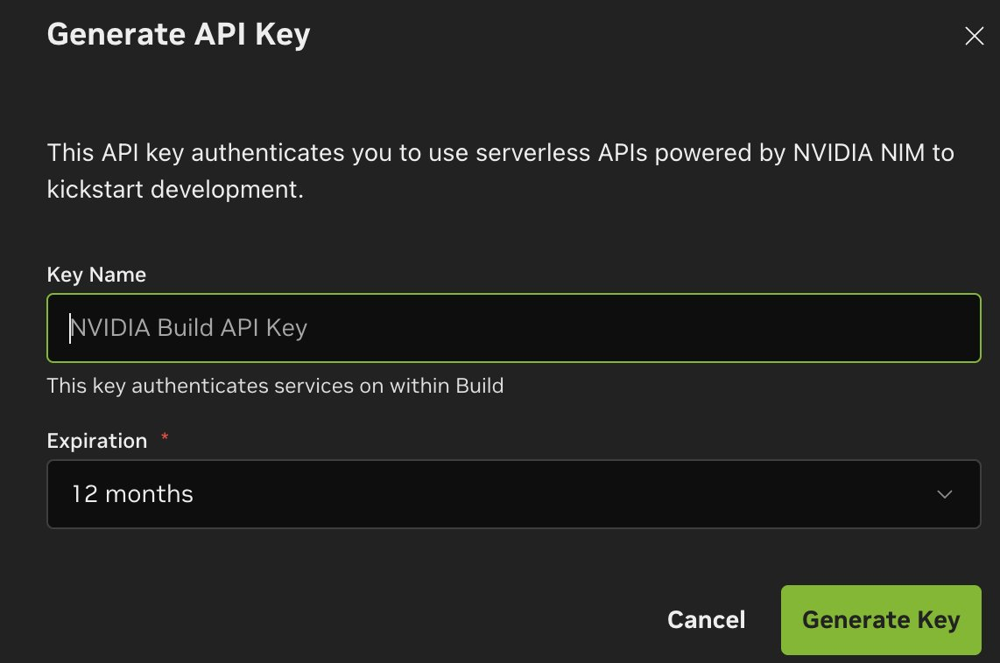
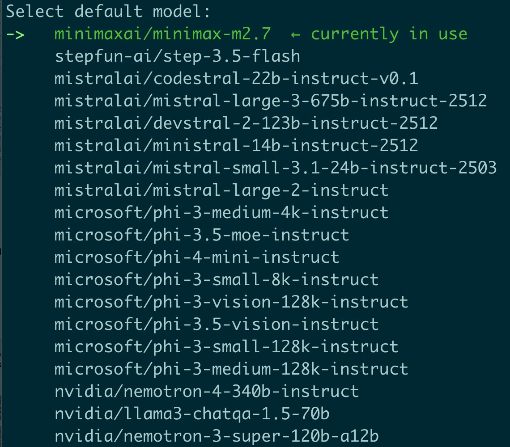
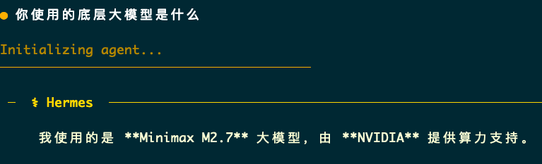

今天在 X 上看到一条很实用的实测帖，讲的是怎么拿到 NVIDIA API Key。我又对照了 NVIDIA 官方文档，核心流程其实很短，普通开发者照着走就行。
先说结论：入口不在一个单独的“开发者后台”，而是在 build.nvidia.com 的模型页面里。
最短流程是这 5 步：
https://build.nvidia.com/explore/discover，登录或注册 NVIDIA 账号。Get API Key。Generate Key。
这里有两个容易忽略的小点：
拿到 key 之后，常见用法就是把它配成环境变量：
NVIDIA_API_KEY=<your_key>
如果你是接 NVIDIA 的通用推理入口，常见 Base URL 是：
https://integrate.api.nvidia.com/v1


一句话总结：
想拿 NVIDIA API Key，记住三件事就够了：去 build.nvidia.com，找 Get API Key，生成后马上保存。
来源说明：
omegaAI (@PierceZhang34)build.nvidia.com 是拿 key 的入口